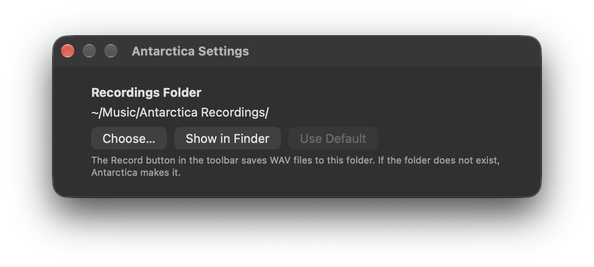

Record
The standalone app can record what you hear to a WAV file (24-bit, stereo, at the sample rate of your audio output). The recording is in real time, and it includes all the changes that you make while it records.
- Click Record in the toolbar, or push ⌘R. The recording starts immediately. If Antarctica is stopped, it also starts to play.
- While Antarctica records, the Record button is red and the toolbar shows the recording time.
- To stop the recording, click Record again or push ⌘R. Antarctica continues to play. If you click Stop, the recording also stops.
At the end, the recording fades out in 50 ms, so it does not stop with a click.
Antarctica saves the recordings in ~/Music/Antarctica Recordings. Each file gets the date and time when it started, for example Antarctica Output 2026-09-26 at 3.04.12 PM.wav. The time uses the format of your region. The name has periods, not colons, because Finder shows a colon as a slash. macOS screenshots use the same pattern.
Change the recordings folder

- Choose Antarctica ▸ Settings… (⌘,).
- Click Choose…, then select a folder.
Click Show in Finder to see the folder. Click Use Default to go back to ~/Music/Antarctica Recordings. If the folder does not exist, Antarctica makes it.
To record a specified length from the start of a seed, faster than real time, use Export audio instead.